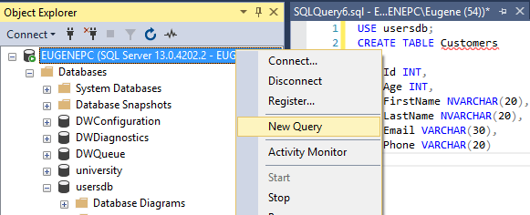

Создание и удаление таблиц
Для создания таблиц применяется команда CREATE TABLE. С этой командой можно использовать ряд операторов, которые определяют столбцы таблицы и их атрибуты. И кроме того, можно использовать ряд операторов, которые определяют свойства таблицы в целом. Одна база данных может содержать до 2 миллиардов таблиц.
Общий синтаксис создания таблицы выглядит следующим образом:
1 2 3 4 5 6 7 | CREATE TABLE название_таблицы(название_столбца1 тип_данных атрибуты_столбца1, название_столбца2 тип_данных атрибуты_столбца2, ................................................ название_столбцаN тип_данных атрибуты_столбцаN, атрибуты_таблицы) |
После команды CREATE TABLE идет название создаваемой таблицы. Имя таблицы выполняет роль ее идентификатора в базе данных,
поэтому оно должно быть уникальным. Имя должно иметь длину не больше 128 символов. Имя может состоять из алфавитно-цифровых символов, а также
символов $ и знака подчеркивания. Причем первым символом должна быть буква или знак подчеркивания.
Имя объекта не может включать пробелы и не может представлять одно из ключевых слов языка Transact-SQL. Если идентификатор все же содержит пробельные символы, то его следует заключать в кавычки. Если необходимо в качестве имени использовать ключевые слова, то эти слова помещаются в квадратные скобки.
Примеры корректных идентификаторов:
1 2 3 4 5 | Userstags$345users_accounts"users accounts"[Table] |
После имени таблицы в скобках указываются параметры всех столбцов и в самом конце атрибуты, которые относятся ко всей таблице. Атрибуты столбцов и атрибуты таблицы являются необязательными компонентами, и их можно не указывать.
В самом просто виде команда CREATE TABLE должна содержать как минимум имя таблицы, имена и типы столбцов.
Таблица может содержать от 1 до 1024 столбцов. Каждый столбец должен иметь уникальное в рамках текущей таблицы имя, и ему должен быть назначен тип данных.
Например, определение простейшей таблицы Customers:
1 2 3 4 5 6 7 8 9 | CREATE TABLE Customers( Id INT, Age INT, FirstName NVARCHAR(20), LastName NVARCHAR(20), Email VARCHAR(30), Phone VARCHAR(20)) |
В данном случае в таблице Customers определяются шесть столбцов: Id, FirstName, LastName, Age, Email, Phone. Первые два столбца представляют идентификатор клиента и его возраст и имеют тип INT, то есть будут хранить числовые значения. Следующие два столбца представляют имя и фамилию клиента и имеют тип NVARCHAR(20), то есть представляют строку UNICODE длиной не более 20 символов. Последние два столбца Email и Phone представляют адрес электронной почты и телефон клиента и имеют тип VARCHAR(30/20) - они также хранят строку, но не в кодировке UNICODE.
Создание таблицы в SQL Management Studio
Создадим простую таблицу на сервере. Для этого откроем SQL Server Management Studio и нажмем правой кнопкой мыши на название сервера. В появившемся контекстном меню выберем пункт New Query.

Таблица создается в рамках текущей базы данных. Если мы запускаем окно редактора SQL как это сделано выше - из под названия сервера, то база данных по умолчанию не установлена. И для ее установки необходимо применить команду USE, после которой указывается имя базы данных. Поэтому введем в поле редактора SQL-команд следующие выражения:
1 2 3 4 5 6 7 8 9 10 11 | USE usersdb;CREATE TABLE Customers( Id INT, Age INT, FirstName NVARCHAR(20), LastName NVARCHAR(20), Email VARCHAR(30), Phone VARCHAR(20)); |
То есть в базу данных добавляется таблица Customers, которая была рассмотрена ранее.
Также можно открыть редактор из под базы данных, также нажав на нее правой кнопкой мыши и выбрав New Query:

В этом случае в качестве текущей будет рассматриваться та база данных, из под которой был открыт редактор, и дополнительно ее устанавливать с помощью команды USE не потребуется.
Удаление таблиц
Для удаления таблиц используется команда DROP TABLE, которая имеет следующий синтаксис:
1 | DROP TABLE table1 [, table2, ...] |
Например, удаление таблицы Customers:
1 | DROP TABLE Customers |
Переименование таблицы
Для переименования таблиц применяется системная хранимая процедура "sp_rename". Например, переименование таблицы Users в UserAccounts в базе данных usersdb:
1 2 | USE usersdb;EXEC sp_rename 'Users', 'UserAccounts'; |